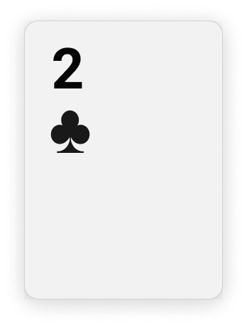
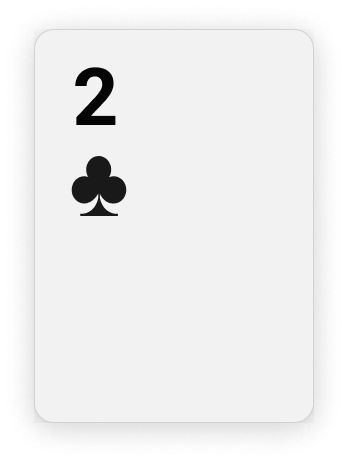

Flip Over

Select any number of the cards below and choose “Flip Over” from the plugin relaunch menu. This flips the cards over so that anybody can see them. Select flip over again to hide them. If you don’t see the plugin relaunch menu, you will see a prompt to install the plugin instead. Do so to continue!
Shuffle

Select all the cards below and choose “Shuffle” from the plugin relaunch menu. This combines the cards and shuffles them in a random order. Select each one and spread them out, them flip them over to see how they’ve been shuffled.
.png)
.png)
.png) 

Count Selection

Select all the cards below and choose “Count Selection” from the plugin relaunch menu. This tells you how many cards you have selected (in case it’s hard to count manually, like when they’re in a deck).
Gather

Select the card below and choose “Gather” from the plugin relaunch menu. This gathers up all the cards from the tutorial onto that spot so you can start a new game!
Look Privately
Select all the cards below and choose “Look Privately” from the plugin relaunch menu. This gives you (and only you!) a view into the cards below (see right). When auto-refresh is on, select any other set of cards and the view will refresh to those cards. If you turn it off, the view will only refresh when you hit the refresh icon. If you see other people selecting your hand, watch out! They may be snooping on your cards.